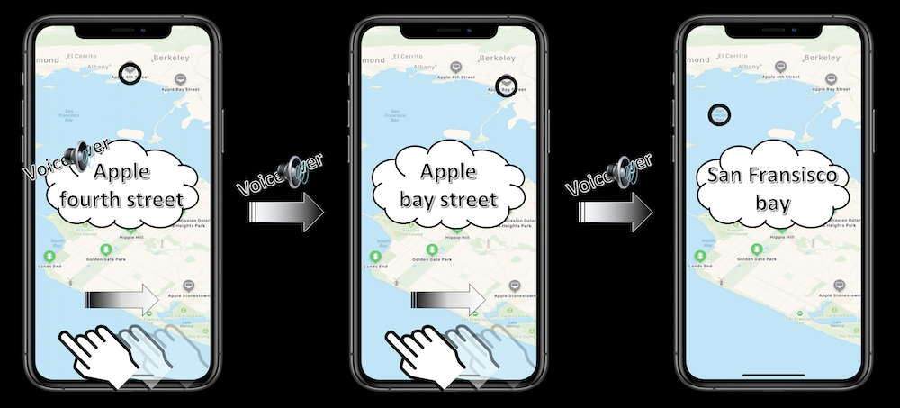
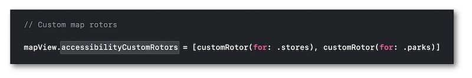
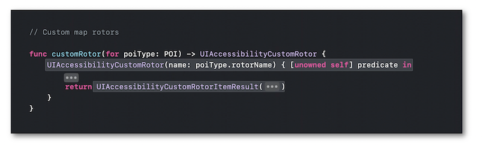
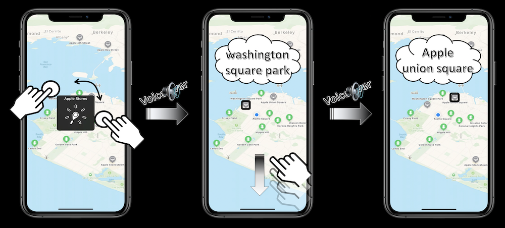
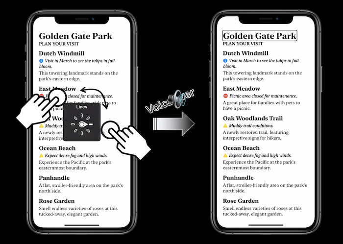

WWDC 2020 : Efficience du rotor
Cette présentation visualisable sur le site développeur officiel d'Apple (session 10116) détaille de façon très précise les différentes manières de personnaliser le rotor pour faciliter la navigation des utilisateurs VoiceOver.

L'utilisation de cette fonctionnalité simplifie énormément la vocalisation des interfaces graphiques plus ou moins complexes en permettant la sélection rapide d'éléments.
Les deux principaux thèmes abordés sont les suivants :
- UTILISATION POUR LES PLANS
- UTILISATION POUR LES TEXTES
UTILISATION POUR LES PLANS #
🎬 (01:13)
En laissant VoiceOver gérer nativement les sélections graphiques à l'aide d'un balayage horizontal avec un doigt, on est parfois obligé de parcourir bon nombre d'éléments inutiles avant d'aboutir sur l'objet qui nous intéresse.

Rappel : la sélection native des éléments graphiques accessibles se fera successivement de la gauche vers la droite en partant du coin en haut à gauche pour finir dans le coin en bas à droite.
🎬 (04:03)
Si l'on souhaite présenter vocalement un ensemble bien défini d'éléments graphiques, il est conseillé de personnaliser le rotor en y adjoignant des actions...

... sans oublier de définir le comportement propre à chacune des actions déclenchées par la gestuelle appropriée.

🎬 (03:16)
Une fois l'implémentation réalisée, les actions créées sont proposées dans l'affichage du rotor et, une fois sélectionnées, elles permettent de ne vocaliser que les éléments auxquels elles font référence à l'aide d'un balayage vers le haut ou le bas pour passer de l'un à l'autre.

UTILISATION POUR LES TEXTES #
🎬 (06:07)
Lorsqu'on parcourt une page de texte pouvant contenir des éléments signalétiques très explicites, il est impossible de les filtrer si on ne personnalise pas la gestion native des sélections faites par VoiceOver.

🎬 (07:41)
Pour reprendre et améliorer l'exemple fourni dans l'onglet Contexte, on va s'appuyer sur ce qui a été implémenté pour les plans mais avec une seule action à insérer dans le rotor pour filtrer uniquement les alertes remontées.

Comme il s'agit de texte, la définition des éléments à filtrer va entièrement se structurer autour de leur emplacement et de leur taille.

🎬 (07:22)
Après avoir sélectionné l'action introduite dans le rotor pour filtrer les alertes, un balayage avec un doigt vers le haut ou le bas permet de se déplacer aisément au sein de ce type d'éléments.